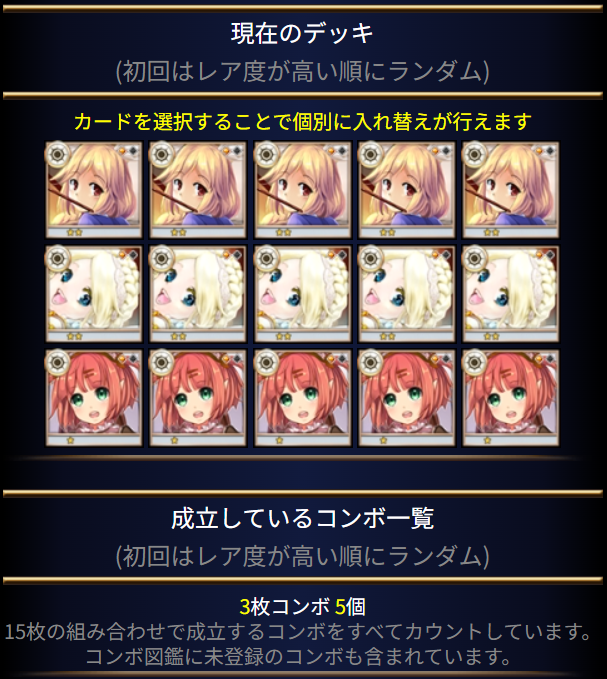

ブートキャンプ
このイベントは、ポーカーのように手札の「コンボ」のみで勝敗を決める特殊な戦闘です。
1. イベント戦闘の基本
- 形式: 手札交換1回のみの即決バトル。(特効効果の祝福カードを最終進化させて所持している場合、手札交換2回に増加)
- デッキ: イベント専用の「イベント用デッキ」（15枚）を使用。デッキ内容はイベント戦闘中以外はいつでも変更可能。
- 勝敗判定: イベント用デッキからランダムに引いた5枚のカードで成立した「コンボ」のみで判定されます。ATK/DEF、スキル、進化度、装備などは一切関係ありません。
- 手札交換: バトル開始時に引いた5枚の手札から、任意の枚数を捨てて引き直すことができます（通常1回限り。特効効果で2回交換）。
- 対戦相手: NPCキャラクター。
2. 重要な要素：「攻力」と「全力攻撃」
- 攻力消費: イベント戦闘には「攻力」を消費します。
- 全力攻撃:
- 消費攻力: 3（通常は1）。
- 効果: 勝敗得点＋100、獲得イベントスコアが5倍になります。
- 選択タイミング: 手札交換を終え、手が確定した後に、攻力1消費か3消費（全力攻撃）かを選択できます。
- 高得点の手札が揃った時を狙って全力攻撃を仕掛けるのが効果的です。
- 攻力回復と離脱:
- いつでもイベント画面から離脱して攻力回復を待つことができます。手札が良いときは攻力回復を待って全力攻撃することもできます。
- ただし、イベント戦闘が保留状態になるため、イベントデッキの編集はできません。
- 倉庫へのカードの出し入れは強制敗北につながる可能性があります。
3. イベントデッキ構築のヒント
- 推奨戦略: 5枚のランダム抽出で必ずコンボが成立するように、デッキを単一属性のカードで統一して「属性統一コンボ」を常時成立させるのが安全策となります。
- コンボ確認方法:
- フレンドのコンボ図鑑を閲覧できます（R以下の低級コンボは最初の方にあります）。
- このサイトのデータベースにコンボ情報が登録されています。
- ブートキャンプのデッキ機能で、イベント用デッキに入れたカードで成立可能なコンボの一覧を確認できます。見つけられなかったコンボを発見するチャンスでもあります。
要するに
デッキを単一属性で固めて常時「属性統一コンボ」を成立させておいて、良い手札が引けたら「全力攻撃」（攻力3消費）でイベントスコアを大量に稼ぐことが安定した攻略方法です。
※おまけ
どうしてもコンボカードがない！ そんな時は以下のデッキを用意しましょう。

- カード:
- 光 キキーモラ UC
- 光 シルキー UC
- 光 ブラウニー C
- カードの入手:
- 通常クエスト
- 無料ガチャ